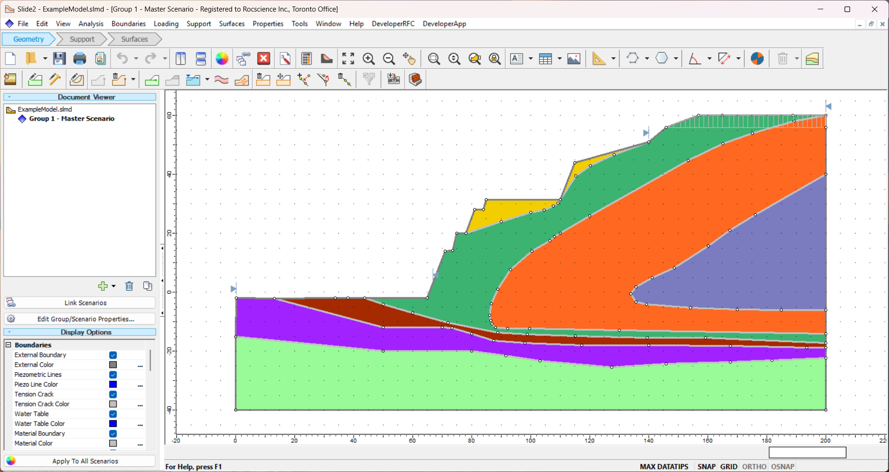

Slide2 Scripting Reference Manual#
Version: 1.0.0
Prerequisites#
Before you begin, ensure you have the Slide2 program installed. You must have at minimum Version 9.045 in order to use this feature.
Python Environment#
There are two methods to run a script, which differ in the Python environment used:
- Running on RocScript Editor
Comes pre-installed with Slide2 and includes the Slide2 Python API library
For all-level users
- Running on your own Python environment
Requires downloading the Slide2 Python API library
For advanced users
Please refer to Getting Started with Slide2 Python Scripting for more information.
Install Slide2 Python API Library#
pip installation
pip install Slide2Scripting
If you are not using the latest release of Slide2, you need to specify a library version that matches your Slide2 version. For example:
pip install "Slide2Scripting==1.0.0"
Slide2 Scripting Tutorials#
Please visit the Slide2 tutorial website for more detailed tutorials.

Table of Contents#
- Slide2Scripting
- DisplayOptions
- GroundwaterData
- InterpretData
- InterpretQuery
- Liquefaction
- MaterialProperties
- ProbabilisticStatistics
- ProjectSettings
- StatisticsData
- SupportProperties
- SurfaceOptions
- Utilities
- SeismicLoadSettings
- Slide2InterpretModel
- Slide2Interpreter
- Slide2Model
- Slide2Modeler
- SlopeLimitsSettings
- SupportDesigner
- TensionCrack
- Python Script Examples
- Model Script Example
- Modeler Script Example
- Interpret Script Example
- Seismic Load Settings Example
- Slope Limits Settings Example
- Tension Crack Properties Example
- Support Designer Example
- Material Properties: Basic Example
- Material Properties: Mohr-Coulomb Example
- Material Properties: Undrained Example
- Material Properties: No Strength Example
- Material Properties: Infinite Strength Example
- Material Properties: Hoek-Brown Example
- Material Properties: Generalized Hoek-Brown Example
- Material Properties: Barton-Bandis Example
- Material Properties: Power Curve Example
- Material Properties: Hyperbolic Example
- Material Properties: Vertical Stress Ratio Example
- Material Properties: Drained-Undrained Example
- Material Properties: SHANSEP Example
- Material Properties: Anisotropic Example
- Material Properties: Snowden Anisotropic Example
- Material Properties: Modified Snowden Anisotropic Example
- Material Properties: CNI Rock Mass Example
- Material Properties: Shear-Normal Function Example
- Material Properties: C-Phi Function Example
- Material Properties: Undrained Vertical Function Example
- Material Properties: Discrete Function Example
- Material Properties: Anisotropic Function Example
- Material Properties: Generalized Anisotropic Function Example
- Material Properties: Water Parameters Example
- Material Properties: Hydraulic Properties Example
- Material Properties: Excess Pore Pressure Example
- Material Properties: Rapid Drawdown Example
- Material Properties: Unsaturated Shear Example
- Material Properties: User Defined Functions Example
- Material Properties: User Defined Hydraulic Models Example
- Support Properties: Basic Example
- Support Properties: End Anchored Example
- Support Properties: Grouted Tieback Example
- Support Properties: Soil Nail Example
- Support Properties: Grouted Tieback With Friction Example
- Support Properties: Helical Anchor Example
- Support Properties: Geosynthetic Example
- Support Properties: Micro Pile Example
- Support Properties: RSPile Example
- Support Properties: Launched Soil Nail Example
- Support Properties: User Defined Support Example
- Support Properties: Retaining Wall EFW Example
- Project Settings: General Example
- Project Settings: Soil Profile Example
- Project Settings: Methods Example
- Project Settings: Scenarios Example
- Project Settings: Seismic Example
- Project Settings: Random Numbers Example
- Project Settings: Groundwater Example
- Project Settings: Transient Example
- Project Settings: Statistics Example
- Project Settings: Design Standards Example
- Project Settings: Advanced Example
- Project Settings: Back Analysis Tension Map Example
- Project Settings: Multi-Doc Scenario Model Example
- Surface Options: Surface Type Example
- Surface Options: Surface Filters Example
- Surface Options: Optimize Surface Example
- Surface Options: Grid Search Example
- Surface Options: Block Search Example
- Surface Options: Path Search Example
- Surface Options: Slope Search Example
- Surface Options: Simulated Annealing Example
- Surface Options: Cuckoo Search Example
- Surface Options: Particle Swarm Example
- Surface Options: Auto Refine Search Example
- Modeler Display Options Example
- Interpret Display Options Example
- Interpret Data Example
- Interpret Query Example
- Groundwater Data Example
- Statistics Data Example
- Probabilistic Statistics: Material Example
- Probabilistic Statistics: Support Example
- Probabilistic Statistics: Hydraulic Example
- Probabilistic Statistics: Load Example
- Probabilistic Statistics: Piezo Example
- Probabilistic Statistics: Seismic Example
- Probabilistic Statistics: Water Table Example
- Probabilistic Statistics: Drawdown Example
- Probabilistic Statistics: Tension Crack Example